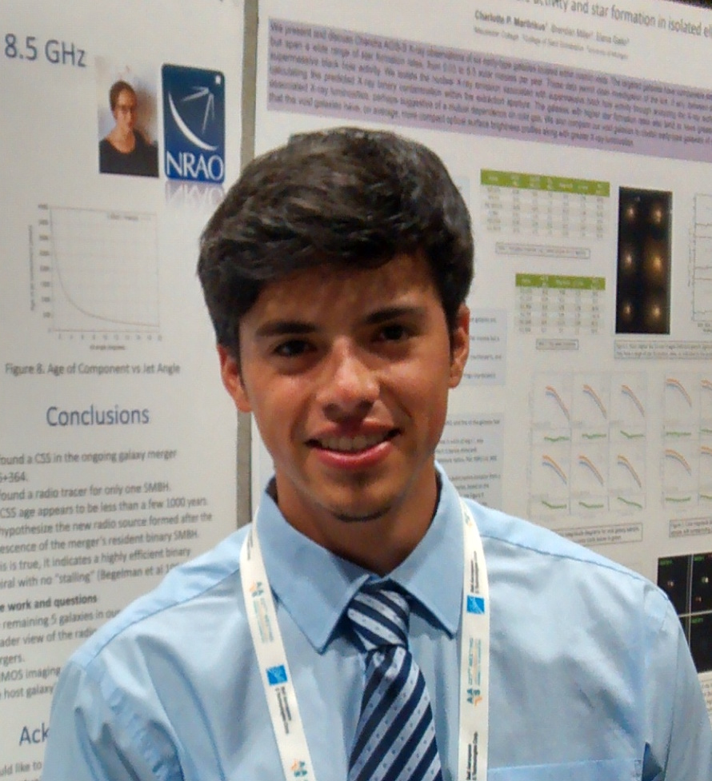

Galaxy and structure formation/evolution
Large scale structure
Numerical simulation
Academic references:
Dr. Kelly Holley- Bockelmann
Dr. Andreas Berlind
Email:
antonio[dot]j[dot]porras[at]vanderbilt.edu
antonio[dot]j[dot]porras[at]vanderbilt.edu
Antonio J. Porras.
Welcome to my webpage. I am a second year graduate student in physics at Fisk University through the Fisk-Vanderbilt Master's-to-PhD Bridge Program. During this coming winter, I hope to apply to various PhD programs I could bridge.